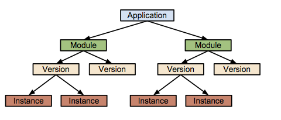
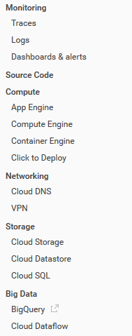
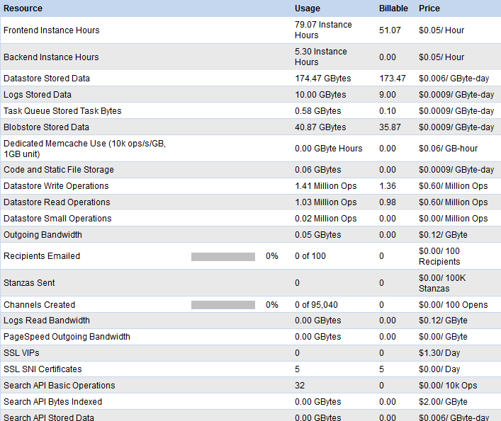
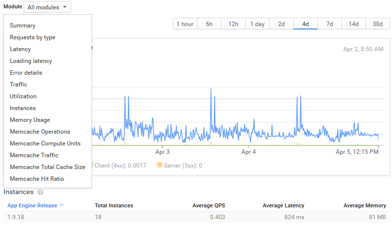
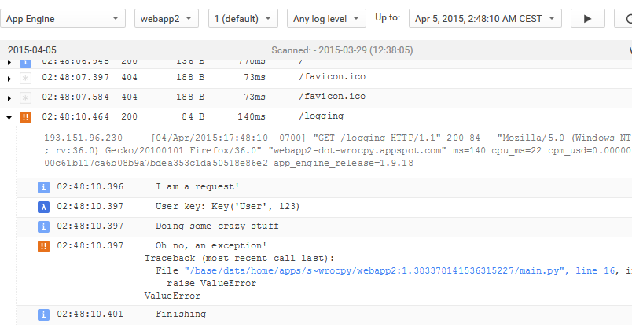
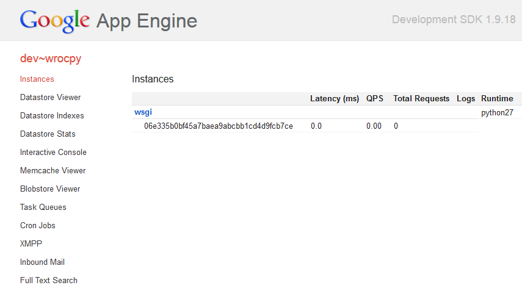

Z głową w chmurze
Google App Engine & Google Cloud
Tomasz Modrzyński / STX Next
Google App Engine
Co to?
- platforma jako usługa (PaaS)
- własne aplikacje działające w infrastrukturze Google
- samoskalowalne i wysokodostępne (99.95% SLA, automatyczna replikacja danych)
Wspierane języki
- Python
- Java (od 2009)
- Go (od 2011)
- PHP (od 2013)
SDK
Hello world
WSGI
main.py
def application(environment, start_response):
response_body = 'We are in App Engine, whoo!'
status = '200 OK'
response_headers = [
('Content-Type', 'text/plain'),
('Content-Length', str(len(response_body))),
]
start_response(status, response_headers)
return [response_body]
app.yaml
application: wrocpy
module: wsgi
version: 1
runtime: python27
api_version: 1
threadsafe: yes
handlers:
- url: /.*
script: main.application
Deployment
$> appcfg.py update app.yaml
11:53 AM Application: wrocpy; module: wsgi; version: 1
11:53 AM Host: appengine.google.com
11:53 AM Starting update of app: wrocpy, module: wsgi, version: 1
11:53 AM Getting current resource limits.
11:53 AM Scanning files on local disk.
11:53 AM Cloning 2 application files.
11:53 AM Uploading 1 files and blobs.
11:53 AM Uploaded 1 files and blobs.
11:53 AM Compilation starting.
11:53 AM Compilation completed.
11:53 AM Starting deployment.
11:53 AM Checking if deployment succeeded.
11:53 AM Deployment successful.
11:53 AM Checking if updated app version is serving.
11:53 AM Completed update of app: wrocpy, module: wsgi, version: 1
Django
import django(<=1.5)-
nie trzeba nic zmieniać w aplikacji, żeby zaczęła działać
- poza bazą danych - ale o tym później
Struktura projektu
-
wrocpy/-
hello/__init__.pyviews.py
__init__.pysettings.pyurls.pywsgi.py
-
manage.pyapp.yaml
Flask
:(
- Flask nie jest builtinem
- App Engine nie ma pojęcia co to easy_install/pip
- przesyłanie eggów niewiele pomoże
- co robić, jak żyć?
Rozwiązanie
- Zainstaluj paczki lokalnie
- Skopiuj kod do projektu
- Wgraj kod aplikacji i kod zależności razem
- ???
- PROFIT! ...eee
Lepsze rozwiązanie:
buildout + appfy.recipe.gae
setup.py
install_requires = [
'Flask'
]
setup(
name='wrocpy-flask',
version='1.0',
description='',
author='',
packages=find_packages(''),
install_requires=install_requires,
tests_require=None,
dependency_links=[],
entry_points=None,
)
buildout.cfg
[buildout]
parts =
app_lib
develop = .
eggs = wrocpy-flask
[app_lib]
recipe = appfy.recipe.gae:app_lib
lib-directory = src/libs
eggs = ${buildout:eggs}
appengine_config.py
import os
import sys
# Inject 3rd party libraries into sys.path
src_path = os.path.dirname(__file__)
distlib_path = os.path.join(src_path, 'libs')
if src_path not in sys.path:
sys.path.insert(0, src_path)
if distlib_path not in sys.path:
sys.path.insert(0, distlib_path)
webapp2
import webapp2
class HelloWorldHandler(webapp2.RequestHandler):
def get(self):
self.response.write('Hi! I\'m running inside webapp2!')
application = webapp2.WSGIApplication([
webapp2.Route(
'/',
HelloWorldHandler,
),
])
Przechowywanie danych
Datastore
Właściwości
- nierelacyjna baza danych
- klucz/wartość
- ewentualnie spójna (eventual consistency)
- wysoka dostępność danych
- transakcje i ACID
- wsparcie dla zapytań (GQL)
Model
class Hello(ndb.Model):
count = ndb.IntegerProperty(indexed=False, default=0)
name = ndb.StringProperty(required=True)
description = ndb.TextProperty()
created_at = ndb.DateTimeProperty(auto_now_add=True)
updated_at = ndb.DateTimeProperty(auto_now=True)
children = ndb.KeyProperty(repeated=True)
hello = Hello(
name='Hi!',
count=3,
children=[
hello_key1,
hello_key2,
],
)
hello.put()
Hooki
import logging
from google.appengine.ext import ndb
class Hello(ndb.Model):
count = ndb.IntegerProperty()
def _pre_put_hook(self):
logging.info('Before putting!')
self.count += 1
def _post_put_hook(self, future):
logging.info('After putting!')
self.count += 2
>>> hello = Hello(count=5)
>>> hello.put()
INFO:root:Before putting!
INFO:root:After putting!
>>> hello.count
8
Structured properties
class Container(ndb.Model):
hello = ndb.StructuredProperty(Hello)
hello_children = ndb.LocalStructuredProperty(
Hello,
repeated=True,
compressed=True,
)
additional_data = ndb.JsonProperty(indexed=True)
user = ndb.PickleProperty(compressed=True)
Zapytania
from datetime import datetime
query = Hello.query(Hello.created_at > datetime(2015, 4, 7))
all_results = query.fetch()
first_page, cursor, more = query.fetch_page(100)
if more:
next_page, cursor, more = query.fetch_page(
100,
start_cursor=cursor,
)
Indeksy
indexes:
- kind: Hello
properties:
- name: count
direction: desc
- name: name
- name: created_at
direction: desc
- kind: Hello
properties:
- name: count
- name: updated_at
direction: desc
Klucz/wartość, powiadasz?
key = ndb.Key(Hello, 581247529)
# or
key = ndb.Key('Hello', 'I can be a string too')
# or using already created object
key = hello_obj.key
# Get it!
new_obj = key.get()
print new_obj
# Hello(name='Hi!', count=3)
Fajne i niefajne strony zapytań
- operator
IN - tylko jeden operator nierówności na zapytanie
- nie ma
LIKE, nie ma wyszukiwania pełnotekstowego - są operatory
ANDiOR\o/ - ale nie można ich nadużywać /o\
Ancestor queries
- obiekty w bazie mogą mieć swojego "przodka"
- przodek i potomkowie należą do jednej grupy, która jest silnie spójna
- limit operacji zapisu w całej grupie: 5/s
- bardziej wydajne niż zwykłe zapytania
Transakcje
@ndb.transactional(retries=3)
def change_name(hello_key, name):
"""Changes hello's name for sure, or dies trying
Will also return hello's last modified date.
"""
hello = hello_key.get()
hello.name = name
hello.put()
return hello.updated_at
Asynchroniczność
hello = Hello(name='Howdy!')
hello_future = hello.put_async()
another_hello_future = Hello.get_by_id_async(724)
# ...123 lines later...
hello_key = hello_future.get_result()
another_hello = another_hello_future.get_result()
Asynchroniczność: tasklety
@ndb.transactional(retries=3)
@ndb.tasklet
def change_name_async(hello_key, name):
"""Changes hello's name for sure, or dies trying
Will also return hello's last modified date.
"""
hello = yield hello_key.get_async()
hello.name = name
yield hello.put_async()
raise ndb.Return(hello.updated_at)
updated_at = change_name_async(
ndb.Key(Hello, 123),
'Whooo',
).get_result()
Co z tym Django?
- Django: relacyjne
- Datastore: nierelacyjne
- ಠ︵ಠ
- django-nonrel django-nonrel.org
Search API
- wyszukiwarka pełnotekstowa
- idealna do... wyszukiwania! (w porównaniu z ndb)
-
brak ograniczeń co do złożoności zapytań
kopytko OR (count>7 AND (NOT type=cat OR type=lion))
-
współrzędne geograficzne:
distance(loc, geopoint(12, 34)) > 10000
- dynamiczne sortowanie wg wyrażenia
Wszystko fajnie, ale...
- słaba dokumentacja
- niespójny interfejs (np. kursor)
- potrafi rzucić losowym wyjątkiem
- strasznie zwalnia dla dużych zbiorów
Blobstore / Cloud Storage
Gdzie leży problem?
with open('sample.txt', 'w') as f:
f.write('Something!')
Traceback (most recent call last):
File "/base/.../appengine/runtime/wsgi.py", line 267, in Handle
result = handler(dict(self._environ), self._StartResponse)
File "/base/.../s~wrocpy/.../main.py", line 7, in application
fopen()
File "/base/.../s~wrocpy/.../main.py", line 2, in fopen
with open('file.txt', 'w') as f:
IOError: [Errno 30] Read-only file system: 'file.txt'
Blobstore
- klucz/wartość
- odczyt/zapis danych binarnych z poziomu aplikacji
- możliwość zapisywania plików od użytkownika
Upload plików
class UploadHandler(blobstore_handler.BlobstoreUploadHandler):
def get(self):
upload_url = blobstore.create_upload_url('/upload')
self.response.write(upload_url)
def post(self):
upload_files = self.get_uploads('file')
blob_info = upload_files[0]
# Do something
Cloud Storage
- zewnętrzna usługa
- wiadra, katalogi i pliki
- dostęp: HTTP lub
gsutil - niedostępny jako builtin ಠ_ಠ
Images API
from google.appengine.api import images
blob_key = some_magic_stuff()
url = images.get_serving_url(blob_key)
URL
https://lh4.ggpht.com/[a-zA-Z0-9\-]+
https://lh4.ggpht.com/0FEEDADEADF15h
URL - resize
https://lh4.ggpht.com/[a-zA-Z0-9\-]+=(w|s|h)\d+
https://lh4.ggpht.com/0FEEDADEADF15h=s300
URL - resize + crop
https://lh4.ggpht.com/[a-zA-Z0-9\-]+=(w|s|h)\d+(-c|)
https://lh4.ggpht.com/0FEEDADEADF15h=s300-c
Kopia zapasowa
- Datastore Admin
- Datastore -> Blobstore/GCS
- GCS -> localhost
BigQuery
- relacyjna baza danych (hurtownia)
- tylko dodawanie nowych rekordów
- brak możliwości modyfikacji relacji
- radzi sobie z terabajtami danych
- zapytania są wolne (kilka sekund do kilku godzin)
- tryb synchroniczny i asynchroniczny
- tabele tymczasowe
Cloud SQL
- MySQL podpięty pod aplikację w App Engine
- dostępny także poza App Engine
- builtin:
MySQLdb
Skalowalność
Moduły, wersje

Dostęp
https://wrocpy.appspot.com
https://module-dot-wrocpy.appspot.com
https://version-dot-module-dot-wrocpy.appspot.com
https://instance-dot-version-dot-module-dot-wrocpy.appspot.com
dispatch.yaml
dispatch:
- url: "*/flask*"
module: flask
- url: "*/django*"
module: django
Konfiguracja modułów
app.yaml per moduł
application: wrocpy
module: django
version: 1
runtime: python27
api_version: 1
threadsafe: yes
instance_class: F2
automatic_scaling:
max_idle_instances: 4
min_pending_latency: 500ms
Automatic, basic, manual
| Automatic | Basic | Manual | |
|---|---|---|---|
| Instancje | tymczasowe | trwałe | trwałe |
| Deadline | 60 sekund | brak | brak |
| Wątki | ✘ | ✔ | ✔ |
| Liczba instancji | Auto | Auto | Ręczna |
| Start/stop | Auto/auto | Auto/auto | Auto/manual |
Komunikacja
from google.appengine.api import modules, urlfetch
hostname = modules.get_hostname(module='flask')
url = 'http://%s/do_something' % hostname
urlfetch.fetch(url)
Usługi
Kolejki zadań
taskqueue
- pull vs push
- obsługa za pomocą handlerów
- skalowanie
queue.yaml
queue:
- name: default
rate: 20/s
- name: incoming
mode: pull
push queues
queue:
- name: user-actions
rate: 500/s
bucket_size: 100
max_concurrent_requests: 500
- name: denormalization
rate: 10/s
bucket_size: 5
max_concurrent_requests: 5
retry_parameters:
min_backoff_seconds: 3600
task_age_limit: 12h
max_doublings: 3
Dodawanie zadania
from datetime import datetime, timedelta
from google.appengine.api import taskqueue
taskqueue.add(
'/do_stuff',
payload=json.dumps(payload),
method='POST',
queue_name='denormalization',
target='flask',
# countdown='30',
# eta=datetime.now() + timedelta(hours=3),
)
deferred
from google.appengine.api import deferred
def do_something(wr, oc, py=None):
obj = ndb.Key(urlsafe=wr).get()
wr.oc = oc
if py:
wr.py = py
wr.put()
deferred.defer(do_something, 2, 5, py='#1', _queue='user-actions')
cron
cron.yaml
cron:
- description: Refresh things for Flask
url: /update
schedule: every 1 hours from 8:00 to 16:00
target: flask
- description: Check something for Django
url: /check_something
schedule: every monday 09:00
target: django
timezone: Europe/Warsaw
memcache
from google.appengine.api import memcache
memcache.add('counter', 5)
memcache.incr('counter')
memcache.incr('counter')
memcache.incr('counter')
value = memcache.get('counter')
print value
# 8
- współdzielony między instancjami
- dane trzymane jako stringi
- wsparcie dla liczników
- compare and set
Cloud Endpoints

Przykładowy endpoint
@endpoints.api(
name='hello',
version='v1',
)
class HelloService(remote.Service):
@endpoints.method(
messages.LanguageMessage,
messages.GreetMessage,
)
def greet(self, request):
greeting = {
'pl': 'Cześć!',
'en': 'Howdy!',
'sp': 'Hola!',
}.get(request.language)
return GreetMessage(greeting=greeting)
messages.py
from protorpc import messages
class LanguageMessage(messages.Message):
language = messages.StringFielg(
1,
required=False,
default='pl',
)
class GreetMessage(messages.Message):
greeting = messages.StringFielg(1, required=True)
Wystawione API
https://wrocpy.appspot.com/_ah/spi/hello/v1/greet
- komunikacja: JSON
- iOS:
hello.discovery - Android:
hello.jar - JS: brak
Fajnie? Niby fajnie...
- świetne na prototypowanie
- średnie na produkcję
- wersjonowanie API - słabo!
- zabugowane generatory
- brak wsparcia dla domen
Przestrzenie nazw
from google.appengine.api import namespace_manager
namespace_manager.set_namespace('kopytko')
# or explicitly
hello = Hello(id=123, name='Hi there', namespace='kopytko')
hello.put()
Wsparcie
- Datastore
- Search API
- taskqueue
- memcache
Wirtualizacja
Compute Engine
- maszyny wirtualne w chmurze
- łatwo skalowalne
Przypadek użycia
- wysokodostępna aplikacja webowa na App Engine
- backend przetwarzający ogromne zbiory danych na Compute Engine
- wymagający niskopoziomowych bibliotek
- komunikacja: HTTP
Managed VMs
- App Engine + Compute Engine
- oparty na Dockerze \o/
- możliwość uruchomienia (i automagicznego skalowania) dowolnego kodu
Korzyści
- brak izolacji środowiska
- brak ograniczeń co do użytych rozwiązań
Administracja
Czym chata bogata

Zużycie

Wizualizacja

Logi
import logging
class LoggingHandler(webapp2.RequestHandler):
def get(self):
logging.info('I am a request!')
logging.debug('User key: %s', ndb.Key('User', 123))
logging.info('Doing some crazy stuff')
try:
raise ValueError
except ValueError:
logging.exception('Oh no, an exception!')
logging.info('Finishing')

Środowisko lokalne
dev_appserver
- serwer działający na localhoście
- emuluje działanie App Engine
- brak asynchroniczności
- wsparcie dla wielowątkowości od niedawna
- pdb

Testowanie
class GAETestCase(unittest.TestCase):
APP_ID = testbed.DEFAULT_ENVIRONMENT['APPLICATION_ID']
APP_PATH = os.path.dirname(__file__)
def setUp(self):
self.testbed = testbed.Testbed()
self.testbed.activate()
self.testbed.setup_env(app_id=self.APP_ID)
super(GAEBaseTestCase, self).setUp()
def tearDown(self):
self.testbed.deactivate()
super(GAEBaseTestCase, self).tearDown()
Stuby
self.testbed.init_memcache_stub()
self.testbed.init_urlfetch_stub()
self.testbed.init_app_identity_stub()
self.testbed.init_blobstore_stub()
self.testbed.init_search_stub()
self.testbed.init_modules_stub()
self.testbed.init_images_stub()
self.testbed.init_taskqueue_stub(root_path=self.APP_PATH)
self.taskqueue = self.testbed.get_stub('taskqueue')
Datastore stub
self.policy = datastore_stub_util.PseudoRandomHRConsistencyPolicy(
probability=1,
)
self.testbed.init_datastore_v3_stub(
consistency_policy=self.policy,
require_indexes=True,
root_path=self.APP_PATH,
auto_id_policy=testbed.AUTO_ID_POLICY_SCATTERED,
)
Remote API shell
- możliwość wykonania RPC spoza App Engine
- RPC/HTTP
- kod wykonuje się lokalnie
App Engine remote_api shell
Python 2.7.8 (default, Oct 17 2014, 09:34:51)
[GCC 4.7.2]
The db, ndb, users, urlfetch, and memcache modules are imported.
s~wrocpy> from models import Hello
s~wrocpy> hello = Hello.get_by_id(123)
s~wrocpy> hello.name = 'kopytko'
s~wrocpy> hello.put()
Key('Hello', 123)
Dzięki za uwagę!
(to jest ta scena, w której zadajecie pytania)